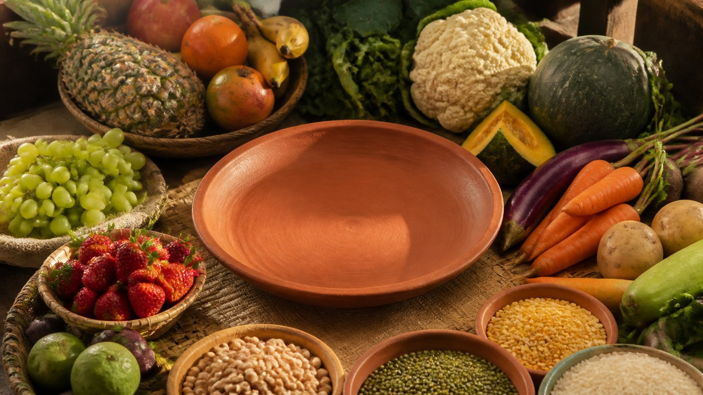

हम आज दुनिया भर के व्यंजन एक क्लिक पर मँगा सकते हैं। पर क्या जो हमें मिल सकता है, वही हमारे लिए बना भी है?
आचार्य उपेंद्र जी एक सीधा पर गहरा सूत्र देते हैं: स्थानीय रूप से उगा हुआ अन्न ग्रहण करो।
स्थानीय भोजन का महत्व क्या है? आचार्य जी के अनुसार जिस भूमि पर आपका जन्म हुआ, वहाँ उगा अन्न ही आपके लिए बना है। वह मिट्टी और उसका पृथ्वी तत्व आपके कर्म और प्रारब्ध से जुड़े हैं, और जो गुण हम खाते हैं, वे हमारे भीतर आते हैं। विदेशी भोजन कभी-कभार ठीक है, पर आधार अपना स्थानीय भोजन रहे।
क्या हर स्वाद मेरी जीवन-शैली बन सकता है?
आचार्य जी कहते हैं कि चीन के व्यक्ति को चीन का भोजन करना चाहिए, आपको नहीं। आप कुछ समय के लिए चीनी भोजन चख सकते हैं, पर वह आपकी जीवन-शैली नहीं बन सकता।
मेक्सिको का भोजन हो या थाईलैंड का, किसी आपात स्थिति में या किसी उत्सव में एक-आध दिन खा लेना ठीक है। पर यदि वही आपकी रोज़ की आदत बन जाए, तो आचार्य जी के शब्दों में, परमेश्वर कहेगा, "तुझे रोग होगा।"
जन्मभूमि का अन्न ही क्यों खाएँ?
यह केवल स्वाद या सेहत का विषय नहीं है। आचार्य जी इसे कर्म और प्रारब्ध (पिछले कर्मों से बना भाग्य, destiny) से जोड़ते हैं।
किसी व्यक्ति का जन्म जिस भूमि पर हुआ है, उसमें उसके कर्म का रहस्य छिपा है। वह मिट्टी उसके लिए होती है, वह पृथ्वी तत्व (earth element) उसके लिए होता है।
उस पृथ्वी से जो उगता है, वह उसी के लिए होता है। प्राणी वही पेड़-पौधे खाता है, और आचार्य जी बताते हैं कि जो गुण उसने खाया है, वही गुण उस प्राणी में होगा।
आप जो रोज़ खाते हैं, वह कहाँ उगा है? क्या आपने कभी सोचा है कि वह आपके भीतर कौन-से गुण भर रहा है?
अपने प्रदेश का भोजन, भगवान की रचना
आपने भारत में जन्म लिया है, भारत में रहते हैं, तो आपके लिए भारतीय भोजन है। और उसमें भी, आपके अपने प्रदेश का भोजन।
बंगाल में हैं तो बंगाल का भोजन आपके लिए अधिक उपयुक्त होगा। महाराष्ट्र में हैं तो वहीं उगा भोजन आपको अधिक प्रिय होगा।
आचार्य जी कहते हैं कि वह केवल प्रिय ही नहीं होगा, भगवान ने वही भोजन आपके लिए उपयुक्त बनाया होगा।
तो क्या दूसरा भोजन बिल्कुल मना है?
नहीं। आचार्य जी स्पष्ट करते हैं कि उन्होंने पहले यह कहा है: अपने स्थानीय भोजन के प्रति रुचि विकसित करो। यह नहीं कहा कि दूसरे भोजन आज़माओ ही मत।
दूसरे अन्न, दूसरी पाक-विधियाँ, स्वाद बदलने के लिए देख लीजिए, चलेगा।
कोई पूछे, "मैं महाराष्ट्र में रहता हूँ, पर मुझे इडली-सांभर बहुत अच्छा लगता है। चलेगा क्या?" आचार्य जी कहते हैं, चलेगा, कोई समस्या नहीं।
तब ऐसे समझिए कि मैं केवल महाराष्ट्र का नहीं हूँ। भारत नाम की एक विशाल भूमि है, और मैं भारतीय हूँ। इसलिए भारत के भोजन आपके लिए चलते हैं।
क्या आपकी थाली में आपकी अपनी भूमि का स्वाद अब भी आधार है, या वह केवल कभी-कभार का मेहमान बन गया है?
मुख्य बातें
- स्थानीय रूप से उगा अन्न ग्रहण करें; विदेशी भोजन कभी-कभार का स्वाद हो, जीवन-शैली नहीं।
- विदेशी भोजन को जीवन-शैली बनाने का परिणाम, आचार्य जी के अनुसार, रोग है।
- जन्म की भूमि, उसकी मिट्टी और पृथ्वी तत्व व्यक्ति के कर्म और प्रारब्ध से जुड़े हैं।
- जो हम खाते हैं, वही गुण हमारे भीतर आते हैं।
- अपने प्रदेश का भोजन सबसे उपयुक्त है, और व्यापक रूप में पूरे भारत का भोजन भी चलता है।
- दूसरे स्वादों को आज़माना मना नहीं है; आधार अपना स्थानीय भोजन रहे।
आगे पढ़ें

हम अक्सर सोचते हैं कि सात्विक आहार (शुद्ध, हल्का, मन को शांत रखने वाला भोजन) खा लिया, तो काम पूरा हो गया। पर आचार्य उपेंद्र जी एक नया पहलू सामने रखते…

हम घी को बस स्वाद या पोषण की चीज़ मानते हैं। पर आचार्य जी इसे एक बिल्कुल अलग दृष्टि से देखते हैं।

हम अक्सर पूछते हैं कि क्या खाना सही है और क्या नहीं। पर इसका एक उत्तर हमारे अपने शरीर की रचना में छिपा है।